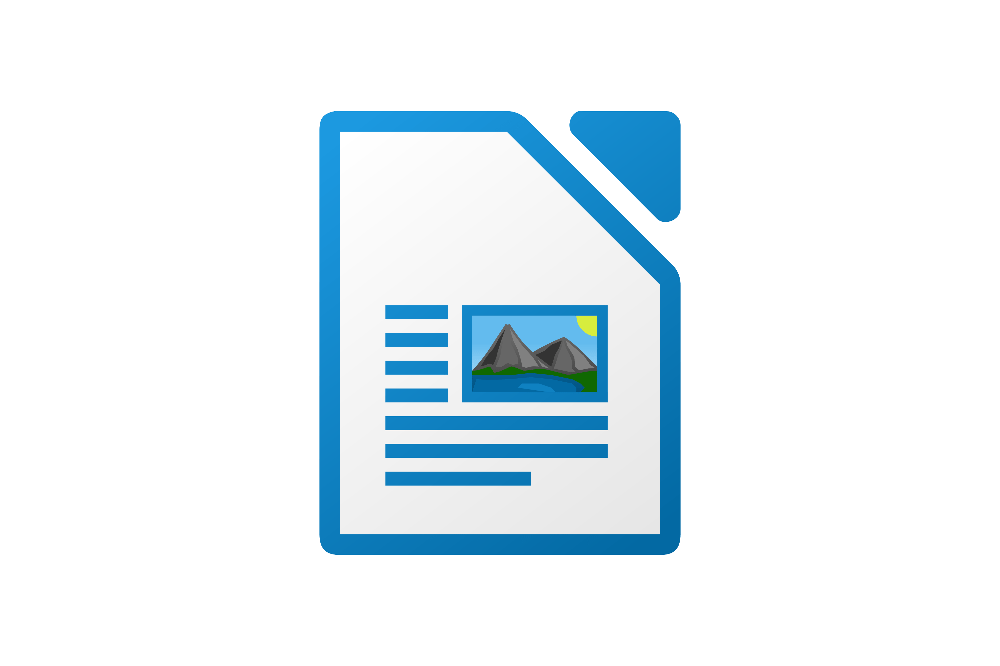

TIC 2020. Tecnología Web
1 - Creación y edición de documentos en Writer
W1-1-01. La barra de titulo de LibreOffice
W1-1-02. La barra de menús en LibreOffice Writer
W1-1-03. Las barras de herramientas
W1-1-04. Las reglas en LibreOffice Writer
W1-1-05. La barra lateral
W1-1-06. El cambio de idioma en LibreOffice
W1-1-07. La instalación de idiomas en LibreOffice
W1-1-08. Cambiar el tamaño de los iconos en LibreOffice
W1-1-09. Cambiar el estilo de los iconos en LibreOffice
W1.1.10. Crear un nuevo documento en blanco
W1-1-11. Crear un nuevo documento de Writer basado en una plantilla
W1-1-12. Guardar documentos en LibreOffice Writer
W1-1-13. Guardar documentos en otros formatos
W1-1-14. Cortar, copiar y pegar en LibreOffice Writer
W1-1-15. Buscar texto en LibreOffice Writer
W1-1-16. Buscar y reemplazar en LibreOffice Writer
W1-1-17-Mostrar las extensiones de archivo en Windows 7
2 - Formato de texto en LibreOffice Writer
W1-2-01. Formato de carácter en LibreOffice Writer
W1-2-02. Formato de párrafo en LibreOffice Writer
W1-2-03. Formato de listas en LibreOffice Writer
W1 2 04 Tabulaciones en LibreOffice Writer
W1 2 05 Letra capitular en LibreOffice Writer
3 - Trabajo con estilos
W1-3-01. Aplicar estilos en LibreOffice Writer
W1-3-02. Modificar estilos en LibreOffice Writer
W1-3-03. Crear estilos personalizados en LibreOffice Writer
W1-3-04. Copiar estilos entre documentos de LibreOffice Writer
4 - Paginación e impresión de documentos con Writer
W1-4-01. Formato de página en LibreOffice Writer
W1-4-02. Encabezados y pies de página en LibreOffice Writer
W1-4-03. Estilos de página en LibreOffice Writer
W1-4-04. Creación de documentos PDF accesibles en Writer
5 - Trabajo con imágenes
W1-5-01. La Galería de imágenes en LibreOffice Writer
W1-5-02. Insertar imágenes en LibreOffice Writer
W1-5-03. Ajuste y anclaje de imágenes en LibreOffice Writer
6 - Herramientas de revisión y autocorrección
W1-6-01. Establecer el idioma predeterminado en LibreOffice Writer
W1-6-02. Instalar diccionarios en LibreOffice
W1-6-03. Opciones de corrección automática en LibreOffice Writer
W1-6-04. Instalar el corrector gramatical en LibreOffice Writer
7 - Trabajo con documentos largos, esquemas y sumarios
W1-7-01. Uso del Navegador en LibreOffice Writer
W1-7-02. Modificar el esquema del documento en LibreOffice Writer
W1-7-03. Numeración de capítulos en LibreOffice Writer
W1-7-04. Creación de sumarios en LibreOffice Writer
Writer Inicial

Creación y edición de documentos en Writer
Iniciar el programa LibreOffice Writer.
Reconocer, activar y desactivar diferentes elementos de la interfaz del programa.
Crear, abrir y guardar documentos.
Guardar los documentos de Writer en diferentes formatos.
Utilizar diferentes métodos de navegación y desplazamiento por los documentos.
Usar técnicas básicas de edición de documentos.
Formato de texto en LibreOffice Writer
Reconocer los diferentes tipos de formatos aplicables al texto.
Aplicar formatos de carácter
Tipo de letra, tamaño y estilo: negrita y cursiva.
Efectos tipográficos: color, subrayado, mayúsculas, versalitas.
Bordes de carácter.
Aplicar formatos de párrafo
Sangría, espaciado e interlineado
Alineación
Relleno de área
Bordes de párrafo.
Aplicar numeraciones y viñetas
Numeraciones
Viñetas
Esquemas numerados
Opciones de pegado especial
Copiar sin formato
Copiar sólo el formato
Trabajo con estilos
Aplicar estilos en los documentos de Writer.
Conocer los distintos tipos de estilos existentes, entre otros: De párrafo, de carácter, de lista
Modificar estilos.
Crear estilos personalizados.
Copiar estilos de un documento a otro.
Paginación e impresión de documentos con Writer
Establecer el formato de página estableciendo márgenes, tamaño, orientación, bordes y fondos.
Configurar encabezados y pies de página que se repitan en todas las páginas.
Insertar numeraciones automáticas de página y otros campos habituales.
Aplicar diferentes formatos de página en un documento.
Establecer opciones de impresión
Exportar en formato PDF, atendiendo a criterios de accesibilidad.
Trabajo con imágenes
Insertar imágenes en los documentos.
Establecer el ajuste entre las imágenes y el texto del documento.
Cambiar el tamaño y la ubicación de las imágenes.
Editar otras propiedades de las imágenes.
Herramientas de revisión y autocorrección
Establecer el idioma predeterminado del documento..
Activar y desactivar la corrección ortográfica automática.
Instalar y usar las herramientas de revisión gramatical.
Usar diccionarios de sinónimos.
Configurar opciones de formato y corrección automática.
Trabajo con documentos largos, esquemas y sumarios
Dominar el uso del Navegador para acceder a toda clase de elementos incluidos en el documento.
Usar el Navegador para modificar el esquema o estructura del documento.
Instalar y usar las herramientas de revisión gramatical.
Numerar automáticamente los títulos y subtítulos.
Crear sumarios y tablas de contenido
Este curso ha sido producido por
AIMME
con contenidos elaborados por
ITI
, contando con la financiación de
IMPIVA
, y fue cedido con licencia
Creative Commons BY-SA
al lamentablemente extinto
PROYECTO MORFEO-FORMACION.